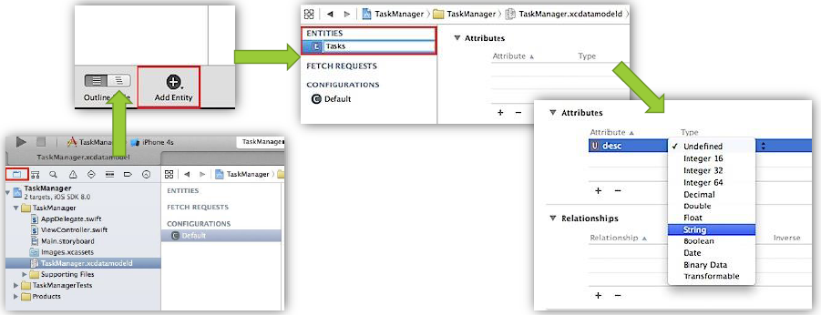

Die Technik - Core Data
Einleitung
Die Verwendung des Frameworks Core Data ist der Hauptbestandteil der App. Mit diesem werden die Buchungsdaten in eine SQLite Datenbank gespeichert. Im Folgenden wird erläutert was bei der Umsetzung einer Core Data App beachtet werden muss und welche Objekte und Methoden die Schnittstelle zu Datenbankfunktionen gewährleisten.
Use Core Data
Bereits beim Anlegen eines Projektes muss man darauf achten, dass man das Häkchen bei Use Core Data setzt. Dadurch werden die für Core Data benötigten Dateien, Objekte und Methoden generiert.
Das DB-Modell erstellen (Managed Object Model, kurz MOM)
Für die Erstellung des MOM wird eine Datei <Projektname>.xcdatamodelid angelegt. Öffnet man diese Datei, so öffnet sich in Xcode das entsprechende Design Tool. Mit diesem kann man Entitäten, Attribute, Beziehungen, etc. anlegen.
Erstellung von Entitäten und Attributen
Ist man mit der Erstellung des Datenbankmodells fertig, generiert man die NSManagedObject-Subklassen. Dazu geht man im Xcode-Menü auf Editor -> Generate NSManagedObject Subclass...

Generierung der Subklassen
Drei wichtige Hinweise:
- Nach der Generierung der Subklassen muss man die einzelnen Entitäten anklicken und in der rechten Sidebar im rechten Reiter unter Class den Eintrag von <Entitätsname> in <Projektname>.<Entitätsname> abändern.
- Nimmt man nach einem Build Änderungen am MOM vor, so muss im Xcode-Menü Product -> Clean ausgeführt werden.
- Nimmt man nach einem Build Änderungen an einer NSManagedObject-Subklasse vor, so muss im iOS-Simulator-Menü iOS-Simulator -> Reset Contents and Settings ausgeführt werden.
Managed Object Context (MOC) holen
Um im Code an die Schnittstelle zur Datenbank zu gelangen, holt man sich in den Controllern den MOC, welcher im App-Delegate generiert wurde.
let managedObjectContext = (UIApplication.sharedApplication().delegate as AppDelegate).managedObjectContextDer MOC wird benötigt um Datenbankabfragen ausführen zu können, Objekte erstellen und löschen zu können, um Datenbankänderungen zu speichern oder zu verwerfen zu können, uvm.
Objekte erstellen/löschen
Die Erstellung eines Objekts kann z.B. so aussehen:
let task = NSEntityDescription.insertNewObjectForEntityForName("Tasks", inManagedObjectContext: managedObjectContext!) as? TasksHinweis: NSManagedObject-Subklassen dürfen nicht mit dem Default-Konstruktor erstellt werden, sondern sollten immer unter Verwendung von Core-Data-Klassen-Methoden instanziiert werden.
Zum Löschen von Objekten wird die Methode deleteObject des MOC verwendet:
managedObjectContext?.deleteObject(managedObject)Die Objekte werden vorerst für die Löschung vorgemerkt. Tatsächlich gelöscht werden sie erst, wenn der MOC gespeichert wird.
Änderungen speichern/verwerfen
Für das Speichern der Änderungen im MOC (ähnlich wie ein Commit einer DB-Transaktion) wird die save-Methode verwendet.
managedObjectContext?.save(errorPointer)Möchte man hingegen die vorgenommenen Änderungen verwerfen, so ruft man die Methode rollback des MOC auf (analog zu einem Rollback einer DB-Transaktion).
managedObjectContext!.rollback()Datenbankabfragen durchführen
Um Datenbankabfragen durchführen zu können braucht man einen FetchedResultController. Dieser benötigt wiederum ein FetchRequest und den MOC. Die Erstellung eines FetchRequests kann z.B. wie folgt aussehen:
let fetchRequest = NSFetchRequest(entityName: "Tasks")
let sortDescriptor = NSSortDescriptor(key: "desc", ascending: true)
fetchRequest.sortDescriptors = [sortDescriptor]
// Prädikat zum filtern erstellen/hinzufügen
let predicate1 = NSPredicate(format: "name contains %@", "b")
fetchRequest.predicate = predicate1Das Hinzufügen von SortDescriptors und Predicates ist optional. Einen Guide zur Erstellung von Prädikaten ist auf der Apple-Developer-Seite zu finden.
Der FetchedResultController wird dann wie folgt erstellt:
fetchedResultController = NSFetchedResultsController( fetchRequest: fetchRequest,
managedObjectContext: managedObjectContext!,
sectionNameKeyPath: nil,
cacheName: nil)Eine Datenbankabfrage wird mit der performFetch-Methode des FetchedResultControllers ausgeführt:
fetchedResultController.performFetch(nil)Zugriff auf Daten aus der Datenbank
Hat man den FetchedResultController zur Hand kann man mit der Methode objectAtIndexPath auf das entsprechende Datenbankobjekt zugreifen. Es ist praktisch das Datenbankobjekt in die entsprechende NSManagedObject-Subklasse umzuwandeln, um direkt auf die Attribute zugreifen zu können, wie im folgenden Code-Snippet zu sehen ist.
func tableView(tableView: UITableView, cellForRowAtIndexPath indexPath: NSIndexPath) -> UITableViewCell {
let entry = fetchedResultController.objectAtIndexPath(indexPath) as Entry
let cell = tableView.dequeueReusableCellWithIdentifier("Cell", forIndexPath: indexPath) as EntryCell
cell.title.text = entry.title
// ... (Code-Snippet gekürzt)
return cell
}Des Weiteren müssen dem TableView die Anzahl der Zeilen und Spalten bekannt gegeben werden:
// MARK: - Table View
func numberOfSectionsInTableView(tableView: UITableView) -> Int {
// Return the number of sections.
return fetchedResultController.sections!.count
}
func tableView(tableView: UITableView, numberOfRowsInSection section: Int) -> Int {
// Return the number of rows in the section.
return fetchedResultController.sections![section].numberOfObjects
}Hat man den FetchedResultController hingegen nicht zur Hand, wird man zumindest ein Objekt einer NSManagedObject-Subklasse haben. Möchte man von diesem Objekt ein Attribut in einem TableView anzeigen lassen, so wird dieses vom Typ NSSet sein. Ein Zugriff sieht wie folgt aus:
func tableView(tableView: UITableView, cellForRowAtIndexPath indexPath: NSIndexPath) -> UITableViewCell {
// Zugriff auf einen Buchungsartikel über das Attribut allObjects,
// welches die Elemente des Sets als Array vom Typ AnyObject beinhaltet.
let selectedEntryItem = entry?.entry_items.allObjects[indexPath.indexAtPosition(1)] as Entry_Items
let cell = tableView.dequeueReusableCellWithIdentifier("Cell", forIndexPath: indexPath) as EntryCell
cell.title.text = (selectedEntryItem.item as Item).name
cell.detail.text = "Stückpreis: \(selectedEntryItem.price) €, Anzahl: \(selectedEntryItem.quantity)"
var total = selectedEntryItem.price.floatValue*selectedEntryItem.quantity.floatValue
cell.value.text = String(format: "%.2f €", total)
return cell
}Auch hier müssen dem TableView die Anzahl der Zeilen und Spalten bekannt gegeben werden:
// MARK: - Table View
func numberOfSectionsInTableView(tableView: UITableView) -> Int {
// Return the number of sections.
return 1
}
func tableView(tableView: UITableView, numberOfRowsInSection section: Int) -> Int {
// Return the number of rows in the section.
var ret = entry?.entry_items.count
if ret != nil {return ret! }
else {return 0 }
}Aktualisieren der Views bei Datenbank-Änderungen
Um die Views bei DB-Änderungen aktualisieren zu können gibt es zwei Wege:
Wenn man einen FetchedResultController hat, kann der Controller als FetchedResultControllerDelegate fungieren
und die Methode controllerDidChangeContent implementieren:
class MainViewController: UIViewController, NSFetchedResultsControllerDelegate,...{
// ...
override func viewDidLoad() {
// ...
fetchedResultController.delegate = self
// ...
}
// ...
//Daten aktualisieren bei Änderung des Managed Object Context
func controllerDidChangeContent(controller: NSFetchedResultsController!) {
tableView.reloadData()
calcAndShowSums()
}
// ...
}Hat man keinen FetchedResultController muss man sich für die Nachricht NSManagedObjectContextObjectsDidChangeNotification über das NSNotificationCenter mit einer Handler-Methode registrieren. In dieser Handler-Methode darf man dann die Änderungen aktualisieren (in den TableView-Methoden darf tableView.reloadData() nicht verwendet werden).
override func viewDidLoad() {
// ... (Code-Snippet gekürzt)
NSNotificationCenter
.defaultCenter()
.addObserver( self,
selector: "handleChangeNotification:",
name: NSManagedObjectContextObjectsDidChangeNotification,
object: managedObjectContext )
}
func handleChangeNotification(n: NSNotification) {
tableView.reloadData()
}